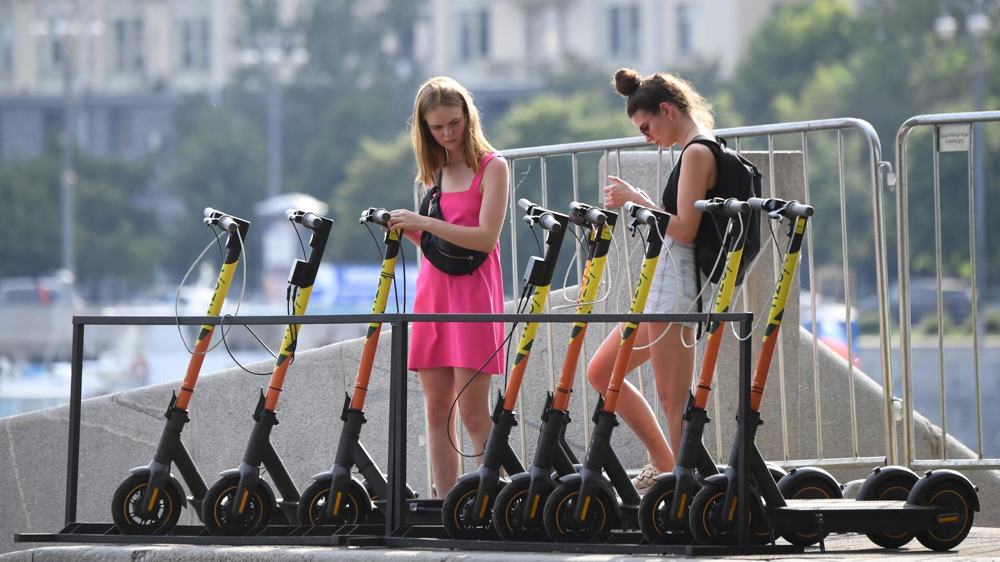
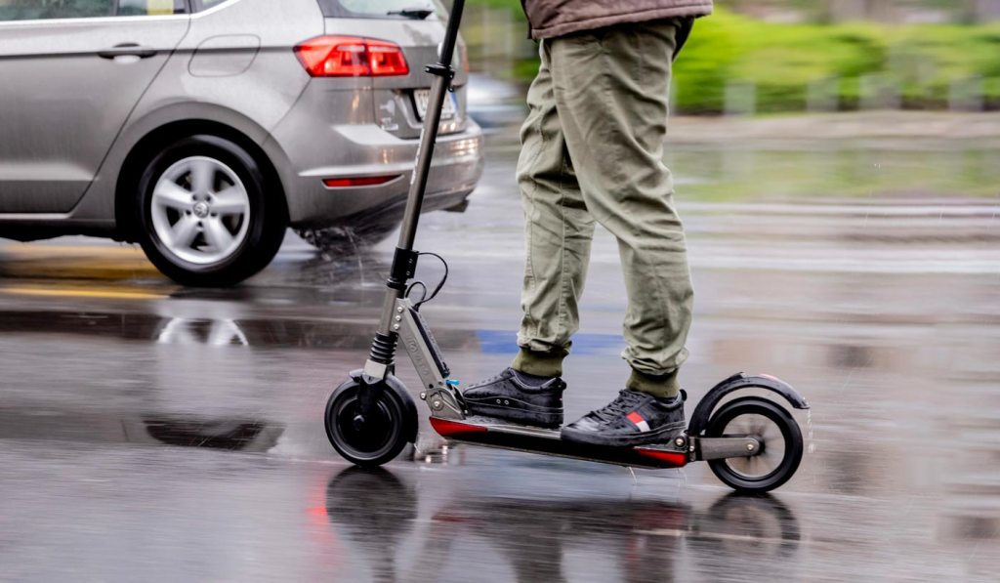
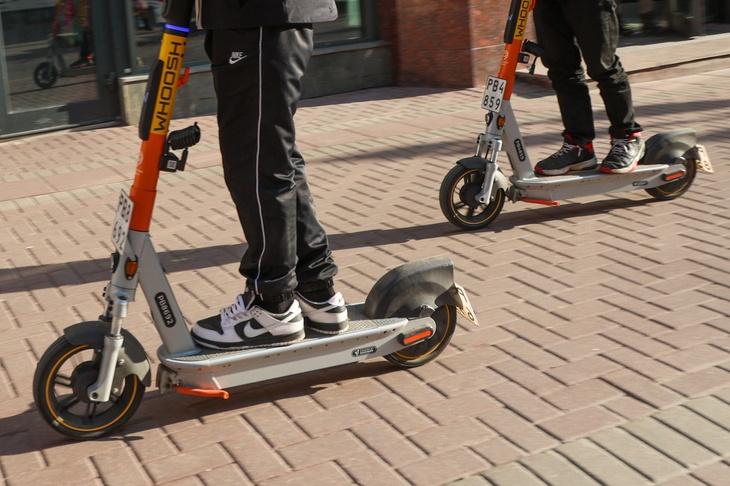

Электросамокат в городской среде
История развития

Электросамокаты, ставшие символом современной урбанистической мобильности, прошли впечатляющую эволюцию — от примитивных механических устройств до высокотехнологичных гаджетов. Их история началась в 1817 году, когда немецкий изобретатель Карл фон Дрез создал «машину для ходьбы» — деревянную конструкцию с двумя колёсами, которая приводилась в движение отталкиванием ногами. Это изобретение, названное «дрезиной», стало прообразом не только велосипедов, но и самокатов. Однако первые попытки оснастить самокат мотором появились лишь в 1915 году, когда в США был запатентован Autoped — устройство с бензиновым двигателем, развивавшее скорость до 40 км/ч. Несмотря на инновационность, Autoped остался нишевым продуктом из-за высокой стоимости (около 100 , чтоэквивалентно 100,что эквивалентно 2500 сегодня) и шумности.
В 1960-х годах компания Go-Ped выпустила первые серийные газовые самокаты, которые стали популярны среди энтузиастов, но из-за экологических норм и громкости двигателя не вписались в городскую среду. Прорыв произошел в 1980-х с появлением электрических моделей в Японии, но свинцово-кислотные аккумуляторы делали их тяжелыми (до 30 кг) и непрактичными. Настоящая революция случилась в 2014 году, когда китайская компания Xiaomi представила Mijia M365 — лёгкий (12 кг) складной электросамокат с литий-ионным аккумулятором и запасом хода 30 км. Его доступная цена ($500) и дизайн сделали его мировым хитом, задав стандарты для отрасли.
2017 год стал переломным: стартап Bird (США) запустил первую систему аренды электросамокатов через приложение по модели «бери и катайся» (dockless). За первый год сервис распространился в 100 городах мира, а к 2020 году пандемия COVID-19 ускорила спрос на индивидуальный транспорт — продажи электросамокатов выросли на 65%. В России первые пилотные проекты стартовали в 2018 году на Тверской улице и в Парке Горького, а к 2023 году Москва внедрила 9000 парковочных стоек и ввела штрафы за езду по тротуарам.
Современные модели, такие как Dualtron Ultra, демонстрируют невероятные характеристики: скорость до 100 км/ч и запас хода 150 км. Однако главный фокус сместился на устойчивое развитие: компании Lime и Bird переходят на перерабатываемые аккумуляторы, а в Берлине и Амстердаме появились солнечные зарядные станции. В 2025 году мировой рынок электросамокатов оценивается в $42 млрд, а их роль в борьбе с пробками и загрязнением воздуха становится критически важной для мегаполисов.
Таким образом, за два столетия электросамокаты прошли путь от курьёзного изобретения до ключевого элемента умных городов, продолжая трансформировать urban-среду и подходы к мобильности.
В 1960-х годах компания Go-Ped выпустила первые серийные газовые самокаты, которые стали популярны среди энтузиастов, но из-за экологических норм и громкости двигателя не вписались в городскую среду. Прорыв произошел в 1980-х с появлением электрических моделей в Японии, но свинцово-кислотные аккумуляторы делали их тяжелыми (до 30 кг) и непрактичными. Настоящая революция случилась в 2014 году, когда китайская компания Xiaomi представила Mijia M365 — лёгкий (12 кг) складной электросамокат с литий-ионным аккумулятором и запасом хода 30 км. Его доступная цена ($500) и дизайн сделали его мировым хитом, задав стандарты для отрасли.
2017 год стал переломным: стартап Bird (США) запустил первую систему аренды электросамокатов через приложение по модели «бери и катайся» (dockless). За первый год сервис распространился в 100 городах мира, а к 2020 году пандемия COVID-19 ускорила спрос на индивидуальный транспорт — продажи электросамокатов выросли на 65%. В России первые пилотные проекты стартовали в 2018 году на Тверской улице и в Парке Горького, а к 2023 году Москва внедрила 9000 парковочных стоек и ввела штрафы за езду по тротуарам.
Современные модели, такие как Dualtron Ultra, демонстрируют невероятные характеристики: скорость до 100 км/ч и запас хода 150 км. Однако главный фокус сместился на устойчивое развитие: компании Lime и Bird переходят на перерабатываемые аккумуляторы, а в Берлине и Амстердаме появились солнечные зарядные станции. В 2025 году мировой рынок электросамокатов оценивается в $42 млрд, а их роль в борьбе с пробками и загрязнением воздуха становится критически важной для мегаполисов.
Таким образом, за два столетия электросамокаты прошли путь от курьёзного изобретения до ключевого элемента умных городов, продолжая трансформировать urban-среду и подходы к мобильности.
Современное использование
Электросамокаты прочно вошли в повседневную жизнь городов, став не просто модным трендом, а полноценным элементом транспортной экосистемы. Их использование охватывает широкий спектр сценариев — от ежедневных поездок на работу до туризма и логистики. В Москве, например, ежедневно совершается более 200 тыс. поездок (данные 2024 года), причем 80% из них приходятся на маршруты между станциями метро и офисами или жилыми кварталами. Это решение проблемы «последней мили»: средняя дистанция поездки составляет 3,7 км, что идеально для компактного транспорта. В Европе лидирует Париж, где сервисы аренды вроде Lime и Dott фиксируют до 500 тыс. поездок в сутки, а в Сингапуре 70% курьеров доставки еды перешли на электросамокаты, сократив время доставки на 25% благодаря манёвренности в плотном трафике.
Демография пользователей также расширяется. Если раньше основную аудиторию составляла молодежь 18–35 лет (около 65%), то сегодня растет доля подростков 14–17 лет (20%) и людей старше 50 (15%). В Берлине даже запущен проект Silver Scooters, направленный на обучение пожилых граждан безопасной езде. Однако это создает новые вызовы: 45% ДТП с участием самокатов в России связаны с нарушениями ПДД подростками, а 30% пожилых пользователей жалуются на сложности с парковкой.
Инфраструктурные решения играют ключевую роль. В Москве 95% станций метро оборудованы парковочными стойками, что сократило время поиска места с 10 до 2 минут. В Барселоне внедрены «умные» парковки с датчиками занятости, которые через приложение показывают свободные зоны. А в Токио действуют строгие правила: самокаты нельзя оставлять в радиусе 100 метров от исторических памятников. Тем не менее, 30% устройств в мировых мегаполисах по-прежнему паркуются хаотично, блокируя тротуары и въезды. Для борьбы с этим в Лондоне ввели штрафы до £300 через приложения аренды, а в Амстердаме используют дронов для мониторинга.
Технологический прогресс кардинально меняет пользовательский опыт. Современные модели оснащены GPS-трекингом, который автоматически снижает скорость до 10 км/ч в пешеходных зонах. В Сан-Франциско внедрена система распознавания алкогольного опьянения: если встроенные датчики фиксируют нарушение координации, самокат блокируется. Компании вроде Niu разрабатывают модели с датчиками качества воздуха, которые перенаправляют пользователей по экологичным маршрутам. Кроме того, растет популярность подписочных моделей: за €50 в месяц в Берлине можно получить неограниченный доступ к премиум-самокатам с заменой батареи по требованию.
Экономический аспект тоже важен. Рынок аренды приносит городам доход: в Берлине каждая поездка облагается налогом в €0,20, что приносит бюджету до €5 млн ежегодно. Для пользователей это выгоднее такси: поездка на 3 км в Москве обходится в 50 руб. против 150 руб. за автомобиль. Однако логистика обслуживания остается проблемой: 40% фургонов, перевозящих самокаты между станциями, работают на дизеле, что сводит на нет экопреимущества. В ответ на это Осло перевел весь парк на электрогрузовики, а Стокгольм использует грузовые велосипеды для перевозки устройств.
Социальное влияние неоднозначно. С одной стороны, электросамокаты сократили нагрузку на метро в час пик на 15% (данные по Нью-Йорку). С другой — участились конфликты с пешеходами: 60% жителей Мадрида жалуются на «агрессивных райдеров». В ответ города экспериментируют с зонированием: в Риме выделены «тихие часы» (с 22:00 до 7:00), когда скорость ограничена до 10 км/ч, а в Мельбурне созданы отдельные «самокатные магистрали» с подсветкой.
Будущее электросамокатов связано с их интеграцией в концепцию умных городов. В Барселоне данные о маршрутах используются для проектирования новых велодорожек, а в Дубае тестируют самобалансирующиеся модели с ИИ-навигацией. К 2030 году аналитики прогнозируют, что 30% городских поездок будут совершаться на микромобильном транспорте, сократив выбросы CO₂ на 12% глобально. Однако для этого необходимо решить ключевые проблемы: безопасность, инфраструктуру и экологичность логистики.
Демография пользователей также расширяется. Если раньше основную аудиторию составляла молодежь 18–35 лет (около 65%), то сегодня растет доля подростков 14–17 лет (20%) и людей старше 50 (15%). В Берлине даже запущен проект Silver Scooters, направленный на обучение пожилых граждан безопасной езде. Однако это создает новые вызовы: 45% ДТП с участием самокатов в России связаны с нарушениями ПДД подростками, а 30% пожилых пользователей жалуются на сложности с парковкой.
Инфраструктурные решения играют ключевую роль. В Москве 95% станций метро оборудованы парковочными стойками, что сократило время поиска места с 10 до 2 минут. В Барселоне внедрены «умные» парковки с датчиками занятости, которые через приложение показывают свободные зоны. А в Токио действуют строгие правила: самокаты нельзя оставлять в радиусе 100 метров от исторических памятников. Тем не менее, 30% устройств в мировых мегаполисах по-прежнему паркуются хаотично, блокируя тротуары и въезды. Для борьбы с этим в Лондоне ввели штрафы до £300 через приложения аренды, а в Амстердаме используют дронов для мониторинга.
Технологический прогресс кардинально меняет пользовательский опыт. Современные модели оснащены GPS-трекингом, который автоматически снижает скорость до 10 км/ч в пешеходных зонах. В Сан-Франциско внедрена система распознавания алкогольного опьянения: если встроенные датчики фиксируют нарушение координации, самокат блокируется. Компании вроде Niu разрабатывают модели с датчиками качества воздуха, которые перенаправляют пользователей по экологичным маршрутам. Кроме того, растет популярность подписочных моделей: за €50 в месяц в Берлине можно получить неограниченный доступ к премиум-самокатам с заменой батареи по требованию.
Экономический аспект тоже важен. Рынок аренды приносит городам доход: в Берлине каждая поездка облагается налогом в €0,20, что приносит бюджету до €5 млн ежегодно. Для пользователей это выгоднее такси: поездка на 3 км в Москве обходится в 50 руб. против 150 руб. за автомобиль. Однако логистика обслуживания остается проблемой: 40% фургонов, перевозящих самокаты между станциями, работают на дизеле, что сводит на нет экопреимущества. В ответ на это Осло перевел весь парк на электрогрузовики, а Стокгольм использует грузовые велосипеды для перевозки устройств.
Социальное влияние неоднозначно. С одной стороны, электросамокаты сократили нагрузку на метро в час пик на 15% (данные по Нью-Йорку). С другой — участились конфликты с пешеходами: 60% жителей Мадрида жалуются на «агрессивных райдеров». В ответ города экспериментируют с зонированием: в Риме выделены «тихие часы» (с 22:00 до 7:00), когда скорость ограничена до 10 км/ч, а в Мельбурне созданы отдельные «самокатные магистрали» с подсветкой.
Будущее электросамокатов связано с их интеграцией в концепцию умных городов. В Барселоне данные о маршрутах используются для проектирования новых велодорожек, а в Дубае тестируют самобалансирующиеся модели с ИИ-навигацией. К 2030 году аналитики прогнозируют, что 30% городских поездок будут совершаться на микромобильном транспорте, сократив выбросы CO₂ на 12% глобально. Однако для этого необходимо решить ключевые проблемы: безопасность, инфраструктуру и экологичность логистики.

Преимущества электросамокатов
Электросамокаты стали важным инструментом устойчивого развития городов, предлагая уникальные преимущества, которые затрагивают экологию, экономику, социальную сферу и технологический прогресс. Их роль выходит далеко за рамки простого средства передвижения, формируя новую философию городской мобильности.
Главное преимущество — снижение углеродного следа. Одна поездка на электросамокате длиной 5 км предотвращает выброс 1,2 кг CO₂ по сравнению с автомобилем. В масштабах мегаполиса это дает значительный эффект: в Москве ежедневная экономия составляет 200 тонн CO₂, что эквивалентно посадке 10 000 деревьев. Уровень шума таких устройств не превышает 40 дБ — тише обычного разговора, что снижает акустическое загрязнение в жилых районах. Компании вроде Lime и Bird усиливают экопотенциал, внедряя перерабатываемые аккумуляторы (до 90% компонентов) и солнечные зарядные станции, как в Амстердаме. К 2030 году, по прогнозам McKinsey, электросамокаты сократят глобальные транспортные выбросы на 7%.
Инфраструктурные решения играют ключевую роль. В Москве 95% станций метро оборудованы парковочными стойками, что сократило время поиска места с 10 до 2 минут. В Барселоне внедрены «умные» парковки с датчиками занятости, которые через приложение показывают свободные зоны. А в Токио действуют строгие правила: самокаты нельзя оставлять в радиусе 100 метров от исторических памятников. Тем не менее, 30% устройств в мировых мегаполисах по-прежнему паркуются хаотично, блокируя тротуары и въезды. Для борьбы с этим в Лондоне ввели штрафы до £300 через приложения аренды, а в Амстердаме используют дронов для мониторинга.
Для пользователей электросамокаты в 3 раза дешевле такси: поездка на 3 км в Москве обойдется в 50 руб. против 150 руб. за автомобиль. Годовые затраты на аренду при активном использовании не превышают 20 000 руб., тогда как содержание машины требует 200 000 руб. в год. Города также экономят: строительство 1 км велодорожки стоит 5 млн руб., а автодороги — 150 млн руб. В Париже программа развития микромобильности сэкономила бюджету €120 млн за счет снижения нагрузки на дорожную инфраструктуру.
В условиях пробок электросамокаты — оптимальное решение. Они развивают скорость до 25 км/ч, обгоняя автомобили, которые в час пик движутся со средней скоростью 12 км/ч (данные по Москве). Это сокращает время в пути на 30%, особенно для маршрутов «последней мили»: 80% поездок начинаются или заканчиваются у станций метро. Компактность и вес (10–15 кг) позволяют брать их в офис или магазин, а складная конструкция удобна для хранения.
Современные модели оснащены умными функциями:
Будущее электросамокатов связано с их интеграцией в концепцию умных городов. В Барселоне данные о маршрутах используются для проектирования новых велодорожек, а в Дубае тестируют самобалансирующиеся модели с ИИ-навигацией. К 2030 году аналитики прогнозируют, что 30% городских поездок будут совершаться на микромобильном транспорте, сократив выбросы CO₂ на 12% глобально. Однако для этого необходимо решить ключевые проблемы: безопасность, инфраструктуру и экологичность логистики.
Электросамокаты доступны для всех возрастных групп. В Берлине проект Silver Scooters обучает пенсионеров безопасной езде, а в Москве подростки составляют 20% пользователей. Для маломобильных граждан некоторые сервисы предлагают модели с сиденьями и подставками. Кроме того, самокаты улучшают здоровье: даже минимальная нагрузка при удержании баланса укрепляет мышцы корпуса и улучшает координацию.
Данные о поездках помогают оптимизировать городскую инфраструктуру. В Барселоне на основе анализа маршрутов расширили сеть велодорожек на 40 км, а в Сингапуре перенастроили светофоры для приоритета микромобильного транспорта. Интеграция с общественным транспортом через единые приложения (например, Яндекс.Про) увеличила пассажиропоток метро на 12% в часы пик.
К 2030 году электросамокаты могут заменить 30% автомобильных поездок в городах-миллионниках. В Осло их включили в программу углеродной нейтральности, а в Токио используют для экологичной доставки грузов. Однако успех зависит от инфраструктуры: выделенные полосы, как в Берлине, снижают аварийность на 25%, а «умные» парковки, как в Москве, экономят время пользователей.
Таким образом, электросамокаты — это не просто транспорт, а ключевой элемент городской экосистемы, объединяющий технологии, экологию и социальные инновации. Их преимущества выходят за рамки индивидуального удобства, формируя устойчивое будущее мегаполисов.
Главное преимущество — снижение углеродного следа. Одна поездка на электросамокате длиной 5 км предотвращает выброс 1,2 кг CO₂ по сравнению с автомобилем. В масштабах мегаполиса это дает значительный эффект: в Москве ежедневная экономия составляет 200 тонн CO₂, что эквивалентно посадке 10 000 деревьев. Уровень шума таких устройств не превышает 40 дБ — тише обычного разговора, что снижает акустическое загрязнение в жилых районах. Компании вроде Lime и Bird усиливают экопотенциал, внедряя перерабатываемые аккумуляторы (до 90% компонентов) и солнечные зарядные станции, как в Амстердаме. К 2030 году, по прогнозам McKinsey, электросамокаты сократят глобальные транспортные выбросы на 7%.
Инфраструктурные решения играют ключевую роль. В Москве 95% станций метро оборудованы парковочными стойками, что сократило время поиска места с 10 до 2 минут. В Барселоне внедрены «умные» парковки с датчиками занятости, которые через приложение показывают свободные зоны. А в Токио действуют строгие правила: самокаты нельзя оставлять в радиусе 100 метров от исторических памятников. Тем не менее, 30% устройств в мировых мегаполисах по-прежнему паркуются хаотично, блокируя тротуары и въезды. Для борьбы с этим в Лондоне ввели штрафы до £300 через приложения аренды, а в Амстердаме используют дронов для мониторинга.
Для пользователей электросамокаты в 3 раза дешевле такси: поездка на 3 км в Москве обойдется в 50 руб. против 150 руб. за автомобиль. Годовые затраты на аренду при активном использовании не превышают 20 000 руб., тогда как содержание машины требует 200 000 руб. в год. Города также экономят: строительство 1 км велодорожки стоит 5 млн руб., а автодороги — 150 млн руб. В Париже программа развития микромобильности сэкономила бюджету €120 млн за счет снижения нагрузки на дорожную инфраструктуру.
В условиях пробок электросамокаты — оптимальное решение. Они развивают скорость до 25 км/ч, обгоняя автомобили, которые в час пик движутся со средней скоростью 12 км/ч (данные по Москве). Это сокращает время в пути на 30%, особенно для маршрутов «последней мили»: 80% поездок начинаются или заканчиваются у станций метро. Компактность и вес (10–15 кг) позволяют брать их в офис или магазин, а складная конструкция удобна для хранения.
Современные модели оснащены умными функциями:
- GPS-трекинг блокирует самокаты при выезде за разрешённые зоны (опыт Лондона);
- Автоматическое снижение скорости до 10 км/ч в пешеходных зонах (внедрено в Берлине);
- Датчики падений отправляют экстренные уведомления через приложение;
- ИИ-навигация в моделях Segway Ninebot прокладывает маршруты в обход пробок.
- Такие решения повышают безопасность: в Стокгольме аварийность снизилась на 35% после внедрения этих технологий.
Будущее электросамокатов связано с их интеграцией в концепцию умных городов. В Барселоне данные о маршрутах используются для проектирования новых велодорожек, а в Дубае тестируют самобалансирующиеся модели с ИИ-навигацией. К 2030 году аналитики прогнозируют, что 30% городских поездок будут совершаться на микромобильном транспорте, сократив выбросы CO₂ на 12% глобально. Однако для этого необходимо решить ключевые проблемы: безопасность, инфраструктуру и экологичность логистики.
Электросамокаты доступны для всех возрастных групп. В Берлине проект Silver Scooters обучает пенсионеров безопасной езде, а в Москве подростки составляют 20% пользователей. Для маломобильных граждан некоторые сервисы предлагают модели с сиденьями и подставками. Кроме того, самокаты улучшают здоровье: даже минимальная нагрузка при удержании баланса укрепляет мышцы корпуса и улучшает координацию.
Данные о поездках помогают оптимизировать городскую инфраструктуру. В Барселоне на основе анализа маршрутов расширили сеть велодорожек на 40 км, а в Сингапуре перенастроили светофоры для приоритета микромобильного транспорта. Интеграция с общественным транспортом через единые приложения (например, Яндекс.Про) увеличила пассажиропоток метро на 12% в часы пик.
К 2030 году электросамокаты могут заменить 30% автомобильных поездок в городах-миллионниках. В Осло их включили в программу углеродной нейтральности, а в Токио используют для экологичной доставки грузов. Однако успех зависит от инфраструктуры: выделенные полосы, как в Берлине, снижают аварийность на 25%, а «умные» парковки, как в Москве, экономят время пользователей.
Таким образом, электросамокаты — это не просто транспорт, а ключевой элемент городской экосистемы, объединяющий технологии, экологию и социальные инновации. Их преимущества выходят за рамки индивидуального удобства, формируя устойчивое будущее мегаполисов.

Риски электросамокатов
Несмотря на растущую популярность, массовое распространение электросамокатов сопряжено с серьёзными рисками, которые затрагивают безопасность, экологию, социальную среду и правовое поле. Эти вызовы требуют системного подхода для минимизации негативных последствий.
Главный риск — высокая травмоопасность. В 2023 году в России зарегистрировано 15 тыс. ДТП с участием электросамокатов, причем 45% случаев закончились переломами, черепно-мозговыми травмами или ушибами внутренних органов. Каждая пятая авария происходит из-за нарушения правил:
В Нью-Йорке зафиксирован рекордный показатель: 1 смерть на 100 тыс. поездок. Причины — лихачество, плохое качество дорог и технические неисправности. Например, в Екатеринбурге в 2022 году лопнувшая вилка руля привела к гибели 16-летнего райдера. Премиальные модели с ABS и датчиками столкновений снижают риски, но их доля на рынке аренды не превышает 10%.
Электросамокаты позиционируются как «зелёный» транспорт, но их экологический след противоречив:
Для сравнения: в Осло весь парк обслуживается электрогрузовиками, а в Барселоне отработанные батареи используют для накопления энергии на солнечных станциях.
Электросамокаты стали источником напряжённости в городах:
Правовое регулирование отстаёт от технологий:
Дешёвые модели арендного парка часто ненадёжны:
Экономические риски
Пути минимизации рисков
Электросамокаты — неотъемлемая часть городской мобильности, но их интеграция требует баланса между удобством и ответственностью. Без комплексных мер риски могут перевесить преимущества, превратив инновацию в источник новых проблем.
Главный риск — высокая травмоопасность. В 2023 году в России зарегистрировано 15 тыс. ДТП с участием электросамокатов, причем 45% случаев закончились переломами, черепно-мозговыми травмами или ушибами внутренних органов. Каждая пятая авария происходит из-за нарушения правил:
- 67% водителей ездят по тротуарам, создавая угрозу пешеходам;
- 55% пользователей игнорируют шлемы;
- 30% подростков управляют самокатами в наушниках.
В Нью-Йорке зафиксирован рекордный показатель: 1 смерть на 100 тыс. поездок. Причины — лихачество, плохое качество дорог и технические неисправности. Например, в Екатеринбурге в 2022 году лопнувшая вилка руля привела к гибели 16-летнего райдера. Премиальные модели с ABS и датчиками столкновений снижают риски, но их доля на рынке аренды не превышает 10%.
Электросамокаты позиционируются как «зелёный» транспорт, но их экологический след противоречив:
- Литий-ионные батареи служат всего 2–3 года, а перерабатывается лишь 15% из-за отсутствия инфраструктуры в России. Остальные 85% попадают на свалки, загрязняя почву токсичными веществами (кобальт, никель).
- Логистика обслуживания сводит на нет углеродную экономию: 40% фургонов, перевозящих самокаты между станциями аренды в Москве, работают на дизельном топливе. Каждая такая машина выбрасывает 2,6 кг CO₂ на 1 км пути.
- Производство одного электросамоката генерирует 130 кг CO₂ (данные MIT), что эквивалентно пробегу автомобиля на 500 км.
Для сравнения: в Осло весь парк обслуживается электрогрузовиками, а в Барселоне отработанные батареи используют для накопления энергии на солнечных станциях.
Электросамокаты стали источником напряжённости в городах:
- 60% пешеходов в Москве жалуются на «агрессивных райдеров», которые игнорируют правила (опрос ВЦИОМ). В Санкт-Петербурге за 2023 год зафиксировано 12 столкновений с туристами на Невском проспекте.
- Парковочный хаос: в центре городов 30% самокатов блокируют тротуары, въезды в магазины и пандусы для инвалидов. В Париже это привело к запрету аренды в исторических районах.
- Шумовые жалобы: ночные поездки с громкими сигналами вызывают недовольство жителей. В Токио ввели «тихие часы» (22:00–6:00), когда скорость ограничена до 10 км/ч.
Правовое регулирование отстаёт от технологий:
- В России самокаты мощностью до 250 Вт формально приравнены к пешеходам, но их реальная скорость часто превышает 25 км/ч, что создаёт правовые коллизии. Например, водитель, сбивший пешехода на тротуаре, может избежать ответственности.
- Штрафы за нарушения неэффективны: 1500 руб. за езду по тротуару против 135 евро в Париже.
- Страхование необязательно: только 3% операторов аренды в РФ возмещают ущерб пострадавшим. В Сингапуре каждая поездка автоматически страхуется на $20 тыс.
Дешёвые модели арендного парка часто ненадёжны:
- Отсутствие ABS приводит к заносам на мокрой дороге;
- Слабые тормоза (барабанные вместо дисковых) увеличивают тормозной путь на 30%;
- Уязвимость к хакерским атакам: в Лондоне хакеры взломали 200 самокатов, заблокировав их посреди дорог.
Экономические риски
- Вандализм: до 20% самокатов в Москве выводятся из строя ежемесячно (разбитые дисплеи, украденные аккумуляторы).
- Нерентабельность: срок окупаемости арендного самоката увеличился с 6 до 14 месяцев из-за роста конкуренции.
Пути минимизации рисков
- Инфраструктура: Строительство выделенных полос и «умных» парковок (опыт Берлина).
- Технологии: Внедрение датчиков скорости и автоматической блокировки в пешеходных зонах.
- Законодательство: Введение категории прав для водителей и обязательного страхования.
- Образование: Курсы безопасности для пользователей, как в Хельсинки.
Электросамокаты — неотъемлемая часть городской мобильности, но их интеграция требует баланса между удобством и ответственностью. Без комплексных мер риски могут перевесить преимущества, превратив инновацию в источник новых проблем.

Правила дорожного движения для электросамокатов
Электросамокаты, будучи относительно новым видом транспорта, создают правовые коллизии во многих странах. Их правовой статус, требования к использованию и ответственность за нарушения варьируются в зависимости от региона, что часто приводит к путанице и конфликтам. Анализ международного и российского опыта позволяет выделить ключевые аспекты регулирования, а также проблемы их применения.
В большинстве стран электросамокаты классифицируются по мощности двигателя и максимальной скорости:
- ЕС: Устройства до 250 Вт и 25 км/ч приравнены к велосипедам. Требуется езда по велодорожкам, а на тротуарах — только для детей до 14 лет. В Германии за езду в пьяном виде (от 0,5‰) штрафуют на €1000, а в Париже с 2023 года введен запрет на парковку в центре города.
- США: В Калифорнии самокаты мощнее 750 Вт требуют прав категории M2, а в Нью-Йорке запрещена езда по тротуарам — только проезжие части с ограничением 20 миль/ч (32 км/ч).
- Азия: В Сингапуре обязательны сертификация курьеров и страхование на $20 000, а в Токио запрещено оставлять самокаты ближе 50 м от станций метро.
С 1 марта 2023 года в России действуют обновленные ПДД для средств индивидуальной мобильности (СИМ):
- Классификация:
- Устройства до 250 Вт и 25 км/ч приравнены к пешеходам.
- Мощнее 250 Вт — к мопедам (требуются права категории М).
- Ограничения:
- Запрещена езда по тротуарам (кроме детей до 14 лет).
- Обязательны светоотражатели и звонок.
- Максимальная скорость в пешеходных зонах — 10 км/ч.
- Штрафы:
- Езда по тротуару — 1500 руб. (ст. 12.29 КоАП).
- Вождение в пьяном виде — 30 000 руб. с конфискацией самоката.
- Наезд на пешехода — до 2500 руб. (ст. 12.30 КоАП).
Однако на практике 67% пользователей не знают этих правил (данные ГИБДД, 2024), а отсутствие обязательного обучения приводит к массовым нарушениям. Например, в Москве только 8% арендных самокатов оборудованы звонками, а 45% водителей игнорируют светоотражатели в темное время суток.
Проблемы правоприменения
- Скоростной парадокс: Большинство арендных самокатов формально соответствуют нормам (250 Вт), но их реальная скорость достигает 35 км/ч за счет модификаций.
- Возрастные лазейки: Аренда разрешена с 14 лет, но приложения не проверяют возраст. Подростки составляют 25% нарушителей.
- Парковочный хаос: Отсутствие четких зон приводит к штрафам пешеходов — в Санкт-Петербурге 12% жалоб связаны с эвакуацией личных самокатов, ошибочно принятых за арендованные.
Мировой опыт: эффективные решения
- Геозонирование: В Лондоне приложение автоматически снижает скорость до 8 км/ч в зонах школ и больниц.
- Обязательное обучение: В Хельсинки перед первой поездкой пользователи проходят 10-минутный курс ПДД в приложении.
- QR-коды на шлемах: В Казани внедрена система идентификации нарушителей через сканирование кода.
- Искусственный интеллект: В Сеуле камеры с ИИ фиксируют нарушения и выписывают штрафы через facial recognition.
Рекомендации для России
- Технический контроль: Обязательная сертификация мощности и скорости для всех моделей, включая арендные.
- Инфраструктура: Разметка «красных зон» для парковки и выделенные полосы, как на Ленинском проспекте в Москве.
- Образование: Включение правил для СИМ в школьную программу ОБЖ и тесты в приложениях аренды.
- Страхование: Обязательный полис для аренды (опыт Сингапура) и компенсационный фонд для пострадавших пешеходов.
Итог: Электросамокаты требуют не просто обновления ПДД, а создания отдельной правовой экосистемы. Без интеграции технологий контроля, инфраструктурных изменений и массового просвещения текущие правила останутся декларативными, а конфликты — расти. Пример Осло, где за 2 года аварийность снизилась на 40% благодаря комплексным мерам, доказывает: баланс возможен.

Интеграция электросамокатов в транспортную систему города
Электросамокаты перестали быть изолированным видом транспорта, став частью комплексной городской мобильности. Их успешная интеграция требует не только инфраструктурных изменений, но и переосмысления логистики, тарифной политики и взаимодействия с другими видами транспорта. Мировой опыт показывает, что гармоничное включение самокатов в транспортную экосистему способно снизить пробки, сократить выбросы и повысить качество жизни горожан.
Ключевые элементы интеграции
- Парковочная инфраструктура В Москве 95% станций метро оборудованы специализированными стойками (9 тыс. единиц), что сократило время поиска парковки с 10 до 2 минут. В Берлине внедрены «умные парковки» с датчиками занятости: через приложение пользователи видят свободные места, что снизило хаос на 40%. Однако в исторических центрах, таких как Рим или Прага, узкие улицы ограничивают размещение стоек, что приводит к конфликтам. Решением стали подземные парковки-лифты, как в Токио, где самокаты автоматически опускаются под землю.
- Синхронизация с общественным транспортом Комбинированные тарифы, объединяющие метро и аренду самокатов, пока мало востребованы в России (всего 5% поездок), но в Париже их используют 35% пассажиров. Приложение RATP (Париж) позволяет купить единый билет, включающий проезд на метро и 30 минут аренды самоката. В Стокгольме внедрена бонусная система: за отказ от автомобиля пользователи получают бесплатные минуты аренды.
- Выделенные полосы и зонирование В Берлине созданы «зелёные коридоры» — выделенные полосы для самокатов и велосипедов с синхронизированными светофорами. Это сократило аварийность на 30% и увеличило среднюю скорость до 22 км/ч. В Москве эксперимент на Ленинском проспекте показал снижение ДТП на 25%, но массовое внедрение тормозится из-за нехватки места. В Осло полосы подсвечиваются ночью, что уменьшило количество наездов на пешеходов на 18%.
- Логистика и экология Перевозка самокатов между парковками часто сводит на нет их экопреимущества. В Москве 40% фургонов используют дизельное топливо, выделяя 2.6 кг CO₂ на км. В ответ на это Осло полностью перешел на электрогрузовики, а Амстердам внедрил грузовые велосипеды с прицепами. В Барселоне отработанные батареи от самокатов служат накопителями для солнечных электростанций.
Технологии и данные
- Геозоны: В Лондоне самокаты автоматически замедляются до 8 км/ч возле школ и больниц. В Москве геозоны блокируют парковку вблизи Кремля.
- Аналитика маршрутов: Данные о передвижениях в Барселоне помогли расширить сеть велодорожек на 50 км, а в Сингапуре — оптимизировать работу светофоров.
- ИИ-планирование: В Дубае тестируют самобалансирующиеся самокаты с маршрутизацией, избегающей пробок и аварийных участков.
Социальные аспекты
Интеграция должна учитывать потребности всех групп:
- Для пожилых в Берлине запущены курсы безопасной езды.
- Для маломобильных граждан в Стокгольме доступны самокаты с сиденьями и подставками для тростей.
- В Мумбаи самокаты стали инструментом для доставки лекарств в трущобы, сократив время на 40%.
Вызовы и решения
- Парковочный хаос: Введение штрафов через приложения (опыт Лондона — £30 за неправильную парковку).
- Вандализм: RFID-метки для отслеживания вандалов (внедрено в Милане).
- Неравенство доступа: Социальные тарифы для малоимущих, как в Мехико.
Итог: Успешная интеграция электросамокатов требует симбиоза технологий, инфраструктуры и законодательства. Примеры Стокгольма и Копенгагена, где самокаты стали частью стратегии углеродной нейтральности, доказывают: такой подход снижает пробки на 20% и повышает удовлетворенность горожан на 35%. Однако без инвестиций в «умную» логистику и образование пользователей электросамокаты рискуют остаться источником проблем, а не прогресса.